📋 Project overview
👤 Authorship
Nibal Sharrouf performed this case study in March 2026 as the capstone project for the Google Data Analytics Professional Certificate. The analysis used Python to explore bike‑share trips from November 2021 to October 2022. The final report and visualizations are hosted using GitHub Pages.
📌 Case study brief
2.1 ‑ Scenario
You are a junior data analyst working on the marketing analyst team at Cyclistic, a bike‑share company in Chicago. The director of marketing believes the company’s future success depends on maximizing the number of annual memberships. Therefore, your team wants to understand how casual riders and annual members use Cyclistic bikes differently. From these insights, your team will design a new marketing strategy to convert casual riders into annual members. But first, Cyclistic executives must approve your recommendations, so they must be backed up with compelling data insights and professional data visualizations.
2.2 ‑ About the company
In 2016, Cyclistic launched a successful bike‑share offering. Since then, the program has grown to a fleet of 5,824 bicycles that are geotracked and locked into a network of 692 stations across Chicago. The bikes can be unlocked from one station and returned to any other station in the system anytime.
Until now, Cyclistic’s marketing strategy relied on building general awareness and appealing to broad consumer segments. One approach that helped make these things possible was the flexibility of its pricing plans: single-ride passes, full-day passes, and annual memberships. Customers who purchase single-ride or full-day passes are referred to as casual riders. Customers who purchase annual memberships are Cyclistic members.
Cyclistic’s finance analysts have concluded that annual members are much more profitable than casual riders. Although the pricing flexibility helps Cyclistic attract more customers, Moreno believes that maximizing the number of annual members will be key to future growth. Rather than creating a marketing campaign that targets all-new customers, Moreno believes there is a solid opportunity to convert casual riders into members. She notes that casual riders are already aware of the Cyclistic program and have chosen Cyclistic for their mobility needs.
Moreno has set a clear goal: Design marketing strategies aimed at converting casual riders into annual members. In order to do that, however, the team needs to better understand how annual members and casual riders differ, why casual riders would buy a membership, and how digital media could affect their marketing tactics. Moreno and her team are interested in analyzing the Cyclistic historical bike trip data to identify trends.
The following sections walk through the complete analysis.
1. Ask
🎯 Business objective
This analysis examines how casual riders and annual members use Cyclistic bikes differently, with the objective of identifying actionable strategies to convert casual riders into annual members. Research from Cyclistic’s finance team has shown that annual members are significantly more profitable than casual riders, making the growth of annual memberships a critical focus for the company’s future success.
📊 Key behavioral insights (preview)
By analyzing Cyclistic’s historical trip data, clear patterns in rider behavior emerged. Casual riders are more likely than annual members to ride during evenings, on weekends, and in warmer months. They also show a preference for electric bikes and tend to take longer trips. These insights provide valuable guidance for marketing strategies aimed at engaging casual riders more effectively.
✅ Recommended actions (based on findings)
- Creating targeted transactional emails that highlight the cost savings of becoming an annual member.
- Launching a digital campaign to showcase events and activities accessible via Cyclistic bikes.
- Expanding marketing efforts through digital channels to raise awareness of convenient cycling paths and bike-friendly destinations.
Stakeholders: This project is presented to key stakeholders, including the Cyclistic executive team, the marketing analytics team, and Lily Moreno (director of marketing), to provide a clear understanding of user behaviors and offer data‑driven recommendations that support the company’s strategic goal of increasing annual memberships. By aligning marketing initiatives with these behavioral insights, Cyclistic can more effectively engage casual riders and drive long‑term growth.
3. Process
Data Cleaning & Transformation: Using Python (pandas, numpy) to combine 12 CSV files, remove duplicates, filter nulls, and create ride length, day of week, month. Checked for outliers.
Tools: Python, Jupyter Notebook, pandas, matplotlib, seaborn.
📸 Python Analysis Workflow
📦 1. Import Python libraries
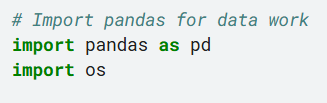
📂 2. List all monthly data folders
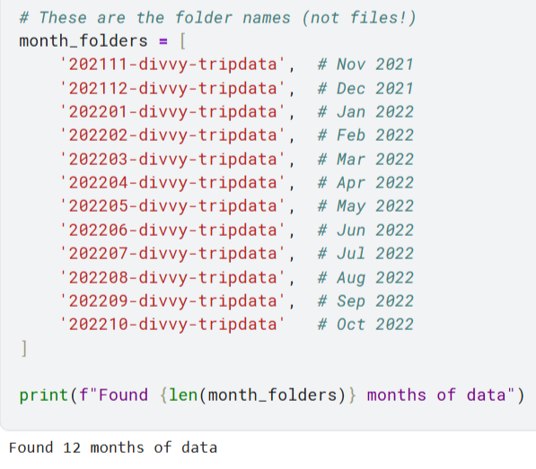
🔍 3. Look inside one folder
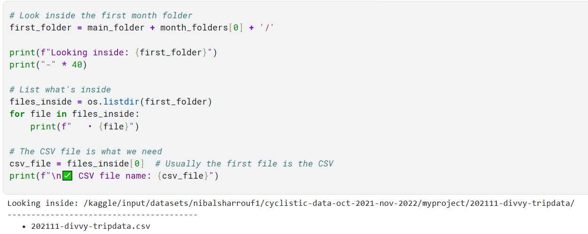
📊 4. Load all months data
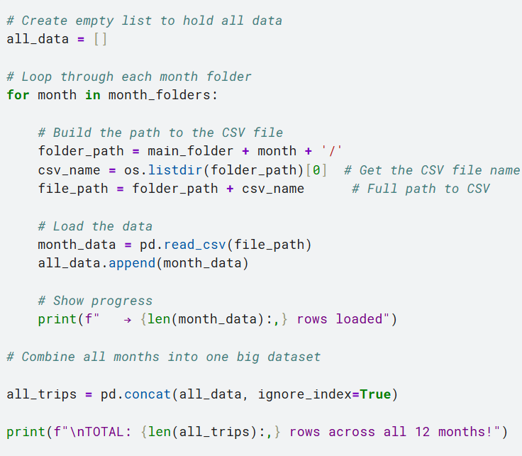
👁️ 5. See first rows of dataset
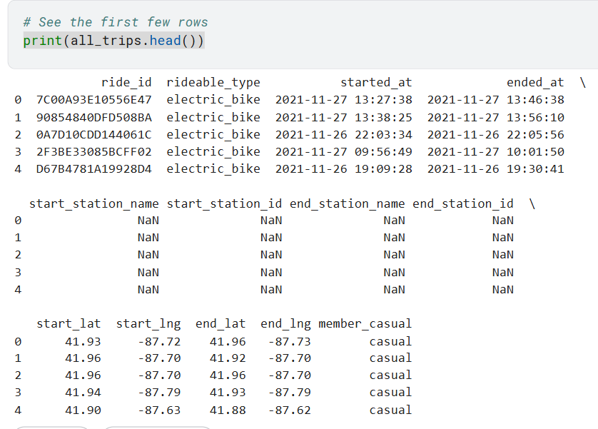
🗑️ 6. Remove duplicate records
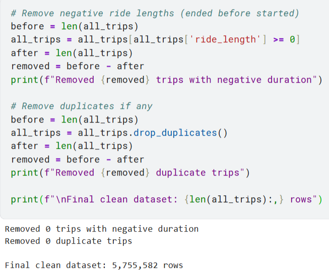
⏱️ 7. Convert to datetime format
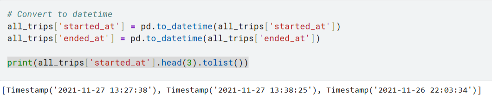
➕ 8. Create calculation columns
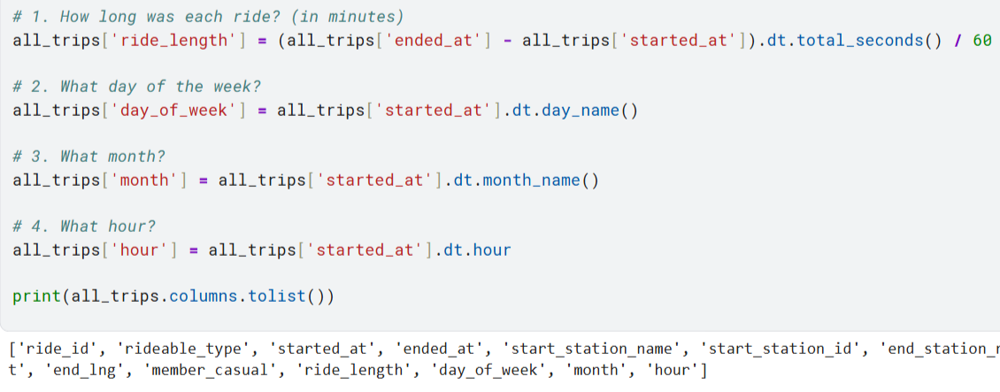
👥 9. Count member vs casual riders
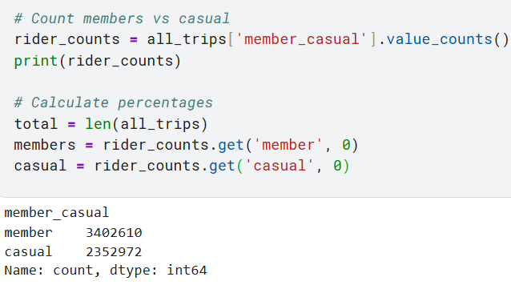
📊 10. Basic stats for all rides
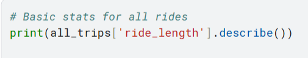
Ride duration statistics (minutes):
count 5.755582e+06 mean 1.944260e+01 std 1.747400e+02 min 0.000000e+00 25% 5.850000e+00 50% 1.033333e+01 75% 1.856667e+01 max 4.138725e+04
ℹ️ 11. Info and data type detection
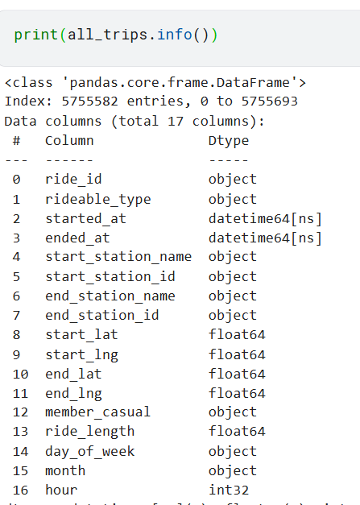
⬆️ Complete Python analysis workflow — from data loading through cleaning to statistical exploration
4. Analyze
Key Findings: Casual riders take longer rides and are more active on weekends (leisure). Members have shorter, consistent rides on weekdays (commuting). Peak hours differ significantly.
6. Act
Recommendations:
- Weekend marketing campaign for casual riders highlighting membership savings.
- Introduce "weekend-only" or off-peak annual pass.
- App feature comparing trip costs vs. membership.